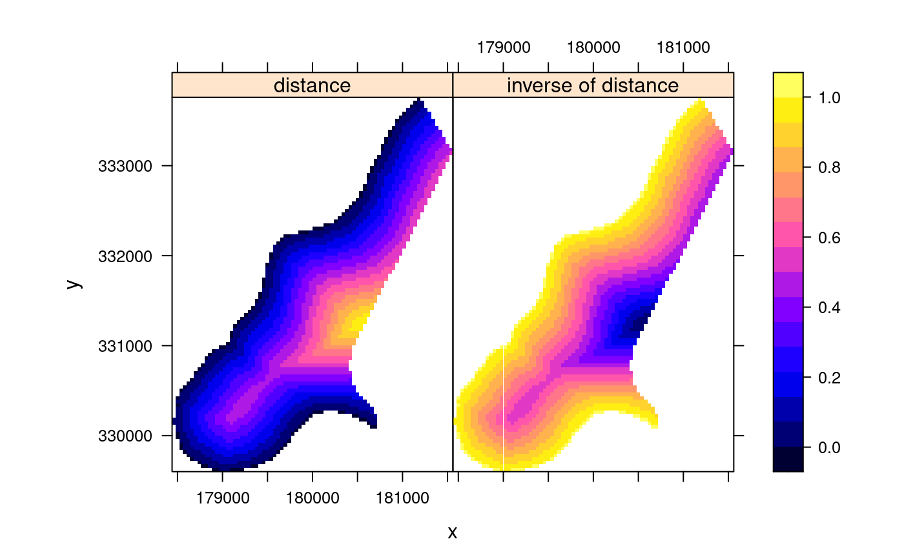
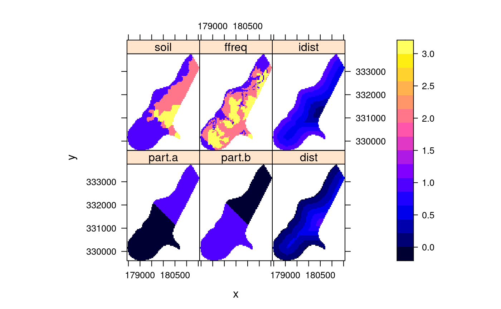

rearrange data in SpatialPointsDataFrame or SpatialGridDataFrame for plotting with spplot (levelplot/xyplot wrapper)
stack.Rdrearrange SpatialPointsDataFrame for plotting with spplot or levelplot
spmap.to.lev(data, zcol = 1:n, n = 2, names.attr) # S3 method for SpatialPointsDataFrame stack(x, select, ...) # S3 method for SpatialGridDataFrame stack(x, select, ...)
Arguments
| data | object of class (or extending) SpatialPointsDataFrame or SpatialGridDataFrame |
|---|---|
| zcol | z-coordinate column name(s), or a column number (range) (after removing the spatial coordinate columns: 1 refers to the first non-coordinate column, etc. ) |
| names.attr | names of the set of z-columns (these names
will appear in the plot); if omitted, column names of |
| n | number of columns to be stacked |
| x | same as |
| select | same as |
| ... | ignored |
Value
spmap.to.lev returns a data frame with the following elements:
x-coordinate for each row
y-coordinate for each row
column vector with each of the elements in columns zcol
of data stacked
factor; name of each of the stacked z columns
See also
Examples
library(lattice) data(meuse.grid) # data frame coordinates(meuse.grid) = c("x", "y") # promotes to SpatialPointsDataFrame meuse.grid[["idist"]] = 1 - meuse.grid[["dist"]] # add variable # the following is made much easier by spplot: levelplot(z~x+y|name, spmap.to.lev(meuse.grid, z=c("dist","idist"), names.attr = c("distance", "inverse of distance")), aspect = "iso")gridded(meuse.grid) = TRUE levelplot(z~x+y|name, spmap.to.lev(meuse.grid, z=c("dist","idist"), names.attr = c("distance", "inverse of distance")), aspect = "iso")